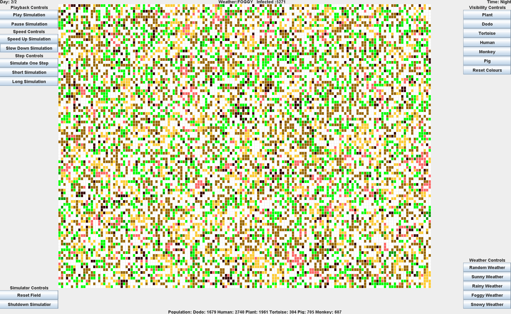

Projects


Ecosystem Simulator
Simulator with GUI(concurrent Executors, Swing, JPanel)
Partner project revolving around the creation of an ecosystem simulator. Includes animals, plants, weather effects, disease and time of
day, dictating animal actions and effecting action probability. Functional and OOP implementation using Java class
structure alongside lambdas and executor class to make use of multi-thread operations to speed up performance where
possible. GUI displays selected actors in ecosystem field alongside population figures, aided by a live pie chart to
display figures visually.

Facial Recognition Login System
AI with Database Systems(Tkinter/PIL/CV2/DeepFace(tensorflow)/MYSQL Connector)


The development of a facial recognition user login system
Uses the Tkinter for the gui, mysql_connector for the database connection to store user information and images,
PIL and CV2 to take, manipulate and analyse images, and deepface(tensorflow) image model to compare images.
The system once given the username of the user that wants to login, will take a picture and check it against all available images in the system under that username, if it matches over 80% of the images in the system, the image taken is then added to the list for future login purposes, thereby allowing the system to develop and become more accurate the more times a user logs in.
Currently for speed, only 20 images per person can be uploaded to the database.
The system once given the username of the user that wants to login, will take a picture and check it against all available images in the system under that username, if it matches over 80% of the images in the system, the image taken is then added to the list for future login purposes, thereby allowing the system to develop and become more accurate the more times a user logs in.
Currently for speed, only 20 images per person can be uploaded to the database.

Ticketing System
Web Development Database System(Flask/MYSQL Connector)


The development of a task ticketing system between groups and projects.
Uses the flask and mysql-connector libraries to run the site communicate with a database to store all system information.
Users can manage and run groups and projects, with those managers being able to create new tickets as well as delete groups/projects or transfer management. They can also invite and kick users. General users can start, drop and finish tickets available in the projects they're in.
Users can manage and run groups and projects, with those managers being able to create new tickets as well as delete groups/projects or transfer management. They can also invite and kick users. General users can start, drop and finish tickets available in the projects they're in.

Photography Booking & Management System
Coursework

The development of a booking system using SQL Databases. Feature Overview: account creation(validated), account editing,
secure login (hashing, salting, captcha), booking, after booking editing, encrypted card saving, inbuilt email contact,
pdf booking receipt, graphical report of sales, imagery portfolio slideshow.

QMUL Python Exoplanet Hunting Programme
Kepler Data Analysis & Graphical Manipulation


A program run by QMUL which involved the use of python to analyse and manipulate data from data sets using python libraries NumPy and matplotlib to accurately
achieve a phase fold of a change in star luminosity from the Kepler mission, to later calculate the radius of the planet orbiting around it. This programme used
the real data from the Kepler mission, resulting in the use of genuine data, being a great opportunity to expand on previous python knowledge and experience these 2 libraries.